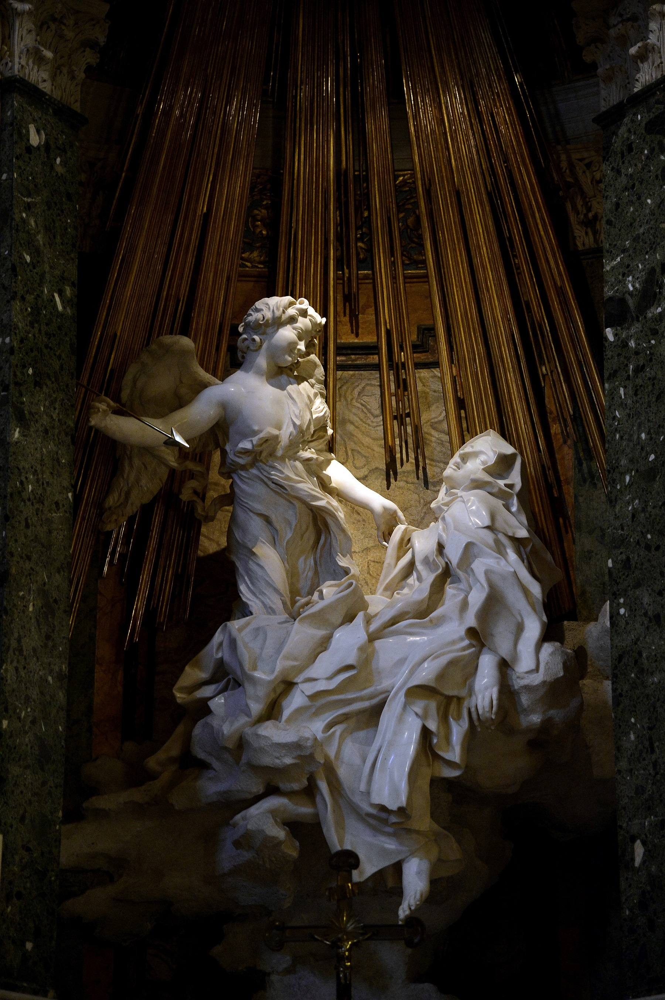
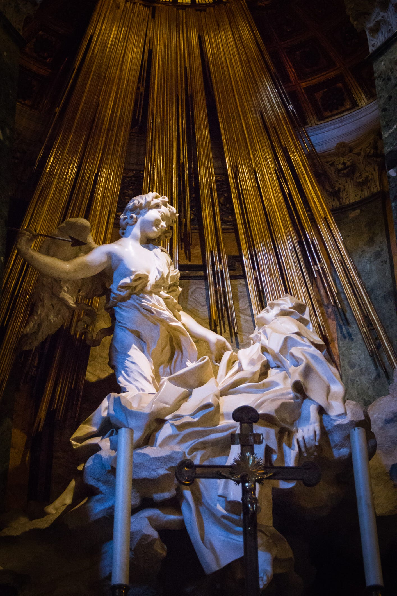

La Scenografia Teatrale e la Macchina di Luce di Bernini
Nell’Estasi di Santa Teresa d’Avila (realizzata da Gian Lorenzo Bernini tra il 1647 e il 1652 all’interno della Cappella Cornaro nella Chiesa di Santa Maria della Vittoria a Roma), la luce non è soltanto un elemento di illuminazione visiva, ma il vero e proprio fulcro espressivo e narrativo dell'opera. Bernini trasforma l'architettura della cappella in un vero e proprio palcoscenico teatrale: la Santa ed l'angelo non poggiano su una base tradizionale, ma sembra che levitino su una nuvola di marmo collocata all'interno dell'edicola centrale (che funziona come un boccascena), mentre ai lati i membri della famiglia Cornaro assistono alla scena affacciati dai loro palchetti, proprio come spettatori a teatro.

La Luce Naturale, i Raggi Dorati e il Marmo
Per rendere tangibile e reale l'evento divino della transverberazione — il trafiggimento del cuore della Santa da parte dell'angelo con una freccia dorata — Bernini progetta una straordinaria "macchina di luce". L'opera viene infatti illuminata dall'alto e dall'esterno attraverso una finestra nascosta incassata sulla parete di fondo dell'edicola, del tutto invisibile all'osservatore che si trova nella navata della chiesa. Da questa fonte luminosa, originariamente dotata di un vetro giallo o ambrato, la luce solare penetra in modo radente e va a colpire direttamente il gruppo scultoreo. Questa luce naturale viene materializzata ed esaltata dai raggi in bronzo dorato collocati dietro le figure, che riflettono i bagliori solari e dissolvono visivamente lo sfondo, isolando la scena in un'atmosfera celeste e fuori dal tempo.

La luce interagisce inoltre in modo differenziato con le superfici in marmo di Carrara, accuratamente lavorate da Bernini: la finitura liscia ed eburnea della pelle dell'angelo e del volto della Santa diffonde un chiarore morbido, mentre il panneggio convulso e profondo della veste di Teresa crea un gioco continuo di ombre e riflessi per rappresentare la forza del travaglio spirituale.

Il Restauro della Cappella Cornaro e la Valorizzazione dell'Opera
Con il recente restauro dell'intera Cappella Cornaro condotto dalla Soprintendenza Speciale di Roma, l'illuminazione dell'opera è stata pienamente valorizzata grazie al ripristino della vetrata del cupolino superiore che canalizza la luce naturale, affiancata da un sistema artificiale discreto concepito per accompagnare e preservare l'effetto scenografico originale ideato da Bernini.